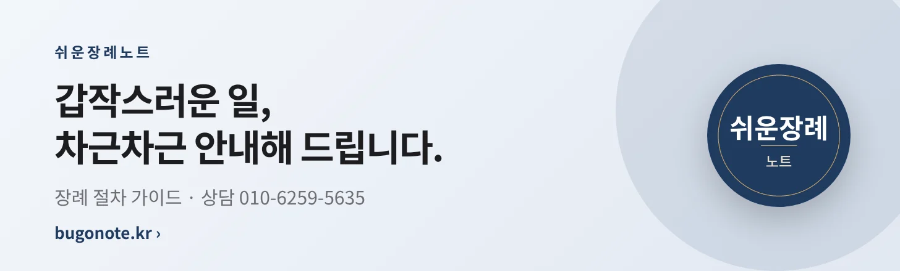

텔스타 vs 흐로닝언 · 승무패 확률
에레디비시 · 12월 4일 (금) 경기 · 통계 AI 계산
경기 요약
통계 AI는 텔스타 승 38%, 무승부 24%, 흐로닝언 승 38%로 계산했습니다. 가장 가능성이 높은 점수는 1-1 (11%)이고, 3골 이상 나올 확률은 64%, 양 팀이 모두 득점할 확률은 66%입니다. 최근 맞대결 2경기에서는 텔스타 0승 0무 2패였습니다.
통계 추정이며 결과를 보장하지 않습니다. 베팅을 권유하지 않습니다.
 광고
광고맞춤 보험 설계 상담혼자서 생활하실 땐 보험이 더 필요합니다. 필요할 때 연락 주세요. · 메리츠화재 보험설계사 심경화소속사 광고 승인 완료 · 설계사 등록번호 326015191
 광고
광고AI 쇼핑 준비도 무료 진단내 쇼핑몰, AI 쇼핑 에이전트에게 보일까요? 무료로 진단해 보세요.
 광고
광고5060 친구·모임 만남새로운 인연, 품격 있게 시작하세요. 카카오 로그인으로 무료 가입.

광고장례 절차 안내 가이드갑작스러운 일, 차근차근 안내해 드립니다.
 광고
광고AI 패독 영상 분석 리포트경주마의 움직임을 영상과 데이터로 읽습니다. 통계 정보 제공이며 추천·권유가 아닙니다.
광고AI 경주 통계·분석 서비스내 손안의 말박사. 통계 정보 제공이며 추천·권유가 아닙니다.
 광고
광고경매 인수 보증금 계산경매, 인수할 돈부터. 주거용 임차인 인수금액 분석을 무료로 확인하세요. 정보 제공이며 법률 자문·권유가 아닙니다.